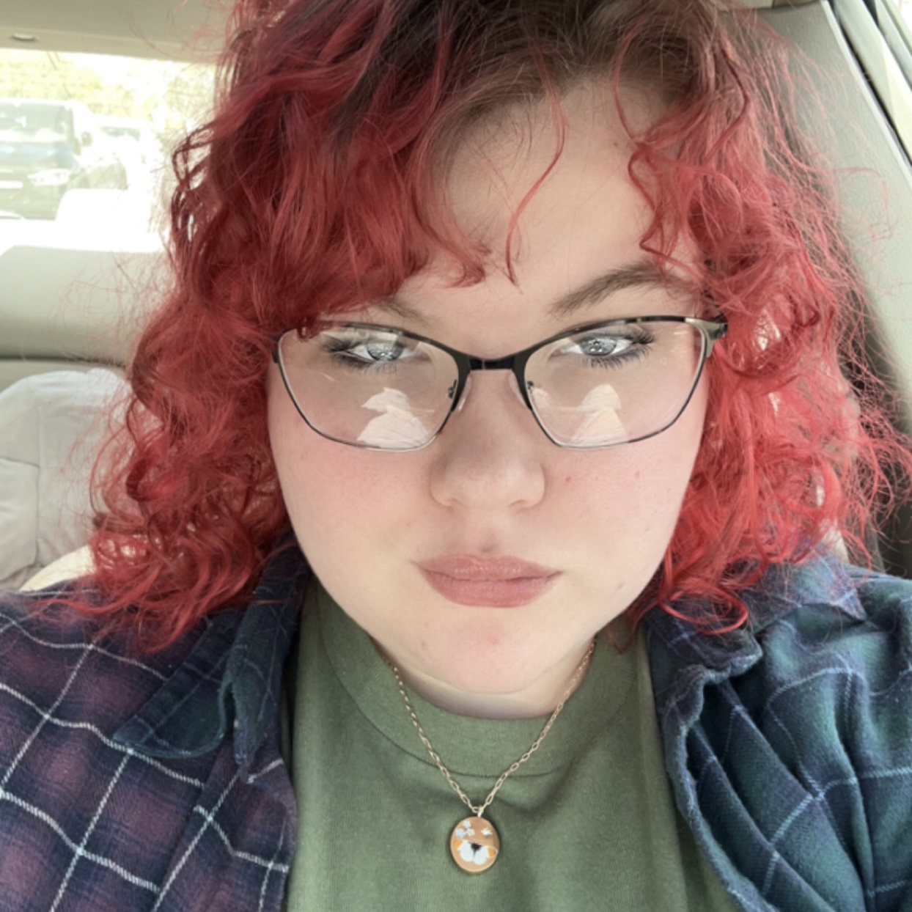

Tabitha Barowsky is a sophomore Honors student majoring in Music and English Literature from Joliet, IL. On campus, Tabitha is very involved in a variety of activities. She is a member of Pi Beta Phi, serves on the Panhellenic Council, plays the bassoon in the Millikin Symphonic Wind Ensemble and Jazz Band and is a Student Experience Ambassador. In her free time, she enjoys listening to Taylor Swift, reading a good book and playing Stardew Valley. After graduation, she hopes to participate in the Disney College Program and obtain a Master’s degree in Library Science.

Abbey Burkhalter is a freshman Chemistry Major at Millikin University. She is also a proud member of the university’s Women’s Soccer team. When she is not playing soccer, she is either at the gym, working, or finding something to keep her busy.

Mariah Crawford is currently a Junior at Millikin University. She is a part of various student organizations, including Black Student Union and Multicultural Voices of Praise. She also serves as the Treasurer for the Kappa Zeta Chapter of Delta Sigma Theta Sorority, Incorporated. In her spare time, Mariah enjoys listening to music and spending time with her Border Collie puppy.

Madelyn Cummins is a Junior Writing major, with a concentration in creative writing. She loves writing poetry and photographing flowers in her free time.

Aiden Etchason is a freshman secondary English education major with plans for endorsement in social science and driver’s education. In his free time, he enjoys traveling, playing sports, and working at Kenney’s Ace Hardware. Aiden is also a member of the Millikin football team.

Kyler Griggs is a first-year transfer student who majors in English with a focus on Creative Writing. In her free time, she enjoys writing, reading, and playing with her cat, and in the future, she wants to be an author and screenwriter.

Tommy Hogarth is a sophomore Secondary English Education major. They were born in Stonington, Illinois, with several brothers and one sister. They currently live in Decatur but plan to leave the state after graduation. They hope eventually to teach higher education and research child development in relation to poverty and trauma. When they are not at work or class, they can be found at home crocheting, reading, or watching dramatic television.
Rodrigo Tonietto Laux is a current freshman from Brazil majoring in computer science and playing tennis at Millikin University. He was born and raised in Montenegro, RS, Brazil. Some of his hobbies include reading, particularly his favorite genre philosophy, and playing sports.

Jocelin Junior Pierre was born in Haiti and immigrated to United States at a young age, residing in Florida. He attended Millikin University from 2018-2023 as an undergraduate majoring in Physics. During his years at Millikin he was involved in two collegiate sports, wrestling and football, as well as worked for the university as a 3-year residential assistant. Pierre also started his own barbering business and served as a barber to his campus community as well as the public community of Decatur, Illinois; you can see some of his work on the Instagram profile for his business.

Anna Quick is a freshman professional writing and literature major with a minor in publishing and editing. She was born in Champaign, Illinois but currently resides in Bement, Illinois. Anna has always had a love for English, and she has been employed at her local library for two years now. When Anna isn’t working or doing schoolwork, she is watching her favorite TV shows or reading a good romance novel.

Dr. Tony R. Magagna is an Associate Professor and Chair of the English Department at Millikin University, specializing in modern American literature and culture. He has twice served as a Fulbright Lecturer in American Studies, both in Germany (2012-2013) and Japan (2018-2019). Over the last few years, Dr. Magagna has developed several courses focused on the intersections of interactive media and literary studies. You can find the website for his Digital Literatures course here.